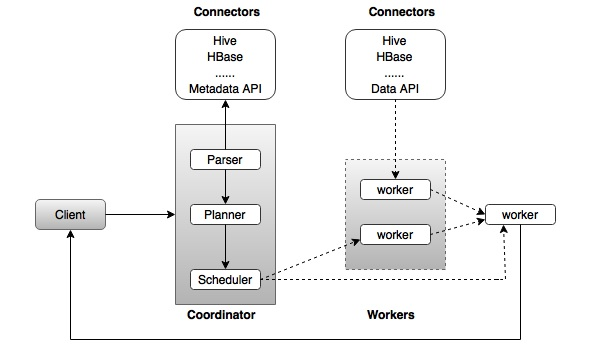
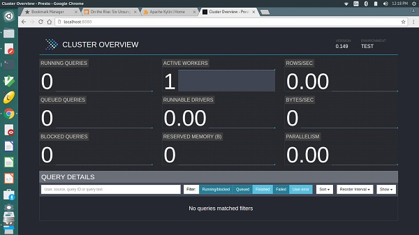

Apache Presto - Quick Guide
Apache Presto - Overview
Data analytics is the process of analyzing raw data to gather relevant information for better decision making. It is primarily used in many organizations to make business decisions. Well, big data analytics involves a large amount of data and this process is quite complex, hence companies use different strategies.
For example, Facebook is one of the leading data driven and largest data warehouse company in the world. Facebook warehouse data is stored in Hadoop for large scale computation. Later, when warehouse data grew to petabytes, they decided to develop a new system with low latency. In the year of 2012, Facebook team members designed “Presto” for interactive query analytics that would operate quickly even with petabytes of data.
What is Apache Presto?
Apache Presto is a distributed parallel query execution engine, optimized for low latency and interactive query analysis. Presto runs queries easily and scales without down time even from gigabytes to petabytes.
A single Presto query can process data from multiple sources like HDFS, MySQL, Cassandra, Hive and many more data sources. Presto is built in Java and easy to integrate with other data infrastructure components. Presto is powerful, and leading companies like Airbnb, DropBox, Groupon, Netflix are adopting it.
Presto − Features
Presto contains the following features −
- Simple and extensible architecture.
- Pluggable connectors - Presto supports pluggable connector to provide metadata and data for queries.
- Pipelined executions - Avoids unnecessary I/O latency overhead.
- User-defined functions - Analysts can create custom user-defined functions to migrate easily.
- Vectorized columnar processing.
Presto − Benefits
Here is a list of benefits that Apache Presto offers −
- Specialized SQL operations
- Easy to install and debug
- Simple storage abstraction
- Quickly scales petabytes data with low latency
Presto − Applications
Presto supports most of today’s best industrial applications. Let’s take a look at some of the notable applications.
Facebook − Facebook built Presto for data analytics needs. Presto easily scales large velocity of data.
Teradata − Teradata provides end-to-end solutions in Big Data analytics and data warehousing. Teradata contribution to Presto makes it easier for more companies to enable all analytical needs.
Airbnb − Presto is an integral part of the Airbnb data infrastructure. Well, hundreds of employees are running queries each day with the technology.
Why Presto?
Presto supports standard ANSI SQL which has made it very easy for data analysts and developers. Though it is built in Java, it avoids typical issues of Java code related to memory allocation and garbage collection. Presto has a connector architecture that is Hadoop friendly. It allows to easily plug in file systems.
Presto runs on multiple Hadoop distributions. In addition, Presto can reach out from a Hadoop platform to query Cassandra, relational databases, or other data stores. This cross-platform analytic capability allows Presto users to extract maximum business value from gigabytes to petabytes of data.
Apache Presto - Architecture
The architecture of Presto is almost similar to classic MPP (massively parallel processing) DBMS architecture. The following diagram illustrates the architecture of Presto.
The above diagram consists of different components. Following table describes each of the component in detail.
| S.No | Component & Description |
|---|---|
| 1. | Client Client (Presto CLI) submits SQL statements to a coordinator to get the result. |
| 2. | Coordinator Coordinator is a master daemon. The coordinator initially parses the SQL queries then analyzes and plans for the query execution. Scheduler performs pipeline execution, assigns work to the closest node and monitors progress. |
| 3. | Connector Storage plugins are called as connectors. Hive, HBase, MySQL, Cassandra and many more act as a connector; otherwise you can also implement a custom one. The connector provides metadata and data for queries. The coordinator uses the connector to get metadata for building a query plan. |
| 4. | Worker The coordinator assigns task to worker nodes. The workers get actual data from the connector. Finally, the worker node delivers result to the client. |
Presto − Workflow
Presto is a distributed system that runs on a cluster of nodes. Presto’s distributed query engine is optimized for interactive analysis and supports standard ANSI SQL, including complex queries, aggregations, joins, and window functions. Presto architecture is simple and extensible. Presto client (CLI) submits SQL statements to a master daemon coordinator.
The scheduler connects through execution pipeline. The scheduler assigns work to nodes which is closest to the data and monitors progress. The coordinator assigns task to multiple worker nodes and finally the worker node delivers the result back to the client. The client pulls data from the output process. Extensibility is the key design. Pluggable connectors like Hive, HBase, MySQL, etc., provides metadata and data for queries. Presto was designed with a “simple storage abstraction” that makes it easy to provide SQL query capability against these different kind of data sources.
Execution Model
Presto supports custom query and execution engine with operators designed to support SQL semantics. In addition to improved scheduling, all processing is in memory and pipelined across the network between different stages. This avoids unnecessary I/O latency overhead.
Apache Presto - Installation
This chapter will explain how to install Presto on your machine. Let’s go through the basic requirements of Presto,
- Linux or Mac OS
- Java version 8
Now, let’s continue the following steps to install Presto on your machine.
Verifying Java installation
Hopefully, you have already installed Java version 8 on your machine right now, so you just verify it using the following command.
$ java -version
If Java is successfully installed on your machine, you could see the version of installed Java. If Java is not installed, follow the subsequent steps to install Java 8 on your machine.
Download JDK. Download the latest version of JDK by visiting the following link.
http://www.oracle.com/technetwork/java/javase/downloads/jdk8-downloads-2133151.html
The latest version is JDK 8u 92 and the file is “jdk-8u92-linux-x64.tar.gz”. Please download the file on your machine.
After that, extract the files and move to the specific directory.
Then set Java alternatives. Finally Java will be installed on your machine.
Apache Presto Installation
Download the latest version of Presto by visiting the following link,
https://repo1.maven.org/maven2/com/facebook/presto/presto-server/0.149/
Now the latest version of “presto-server-0.149.tar.gz” will be downloaded on your machine.
Extract tar Files
Extract the tar file using the following command −
$ tar -zxf presto-server-0.149.tar.gz $ cd presto-server-0.149
Configuration Settings
Create “data” directory
Create a data directory outside the installation directory, which will be used for storing logs, metadata, etc., so that it is to be easily preserved when upgrading Presto. It is defined using the following code −
$ cd $ mkdir data
To view the path where it is located, use the command “pwd”. This location will be assigned in the next node.properties file.
Create “etc” directory
Create an etc directory inside Presto installation directory using the following code −
$ cd presto-server-0.149 $ mkdir etc
This directory will hold configuration files. Let’s create each file one by one.
Node Properties
Presto node properties file contains environmental configuration specific to each node. It is created inside etc directory (etc/node.properties) using the following code −
$ cd etc $ vi node.properties node.environment = production node.id = ffffffff-ffff-ffff-ffff-ffffffffffff node.data-dir = /Users/../workspace/Presto
After making all the changes, save the file, and quit the terminal. Here node.data is the location path of the above created data directory. node.id represents the unique identifier for each node.
JVM Config
Create a file “jvm.config” inside etc directory (etc/jvm.config). This file contains a list of command line options used for launching the Java Virtual Machine.
$ cd etc $ vi jvm.config -server -Xmx16G -XX:+UseG1GC -XX:G1HeapRegionSize = 32M -XX:+UseGCOverheadLimit -XX:+ExplicitGCInvokesConcurrent -XX:+HeapDumpOnOutOfMemoryError -XX:OnOutOfMemoryError = kill -9 %p
After making all the changes, save the file, and quit the terminal.
Config Properties
Create a file “config.properties” inside etc directory(etc/config.properties). This file contains the configuration of Presto server. If you are setting up a single machine for testing, Presto server can function only as the coordination process as defined using the following code −
$ cd etc $ vi config.properties coordinator = true node-scheduler.include-coordinator = true http-server.http.port = 8080 query.max-memory = 5GB query.max-memory-per-node = 1GB discovery-server.enabled = true discovery.uri = http://localhost:8080
Here,
coordinator − master node.
node-scheduler.include-coordinator − Allows scheduling work on the coordinator.
http-server.http.port − Specifies the port for the HTTP server.
query.max-memory=5GB − The maximum amount of distributed memory.
query.max-memory-per-node=1GB − The maximum amount of memory per node.
discovery-server.enabled − Presto uses the Discovery service to find all the nodes in the cluster.
discovery.uri − he URI to the Discovery server.
If you are setting up multiple machine Presto server, Presto will function as both coordination and worker process. Use this configuration setting to test Presto server on multiple machines.
Configuration for Coordinator
$ cd etc $ vi config.properties coordinator = true node-scheduler.include-coordinator = false http-server.http.port = 8080 query.max-memory = 50GB query.max-memory-per-node = 1GB discovery-server.enabled = true discovery.uri = http://localhost:8080
Configuration for Worker
$ cd etc $ vi config.properties coordinator = false http-server.http.port = 8080 query.max-memory = 50GB query.max-memory-per-node = 1GB discovery.uri = http://localhost:8080
Log Properties
Create a file “log.properties” inside etc directory(etc/log.properties). This file contains minimum log level for named logger hierarchies. It is defined using the following code −
$ cd etc $ vi log.properties com.facebook.presto = INFO
Save the file and quit the terminal. Here, four log levels are used such as DEBUG, INFO, WARN and ERROR. Default log level is INFO.
Catalog Properties
Create a directory “catalog” inside etc directory(etc/catalog). This will be used for mounting data. For example, create etc/catalog/jmx.properties with the following contents to mount the jmx connector as the jmx catalog −
$ cd etc $ mkdir catalog $ cd catalog $ vi jmx.properties connector.name = jmx
Start Presto
Presto can be started using the following command,
$ bin/launcher start
Then you will see the response similar to this,
Started as 840
Run Presto
To launch Presto server, use the following command −
$ bin/launcher run
After successfully launching Presto server, you can find log files in “var/log” directory.
launcher.log − This log is created by the launcher and is connected to the stdout and stderr streams of the server.
server.log − This is the main log file used by Presto.
http-request.log − HTTP request received by the server.
As of now, you have successfully installed Presto configuration settings on your machine. Let’s continue the steps to install Presto CLI.
Install Presto CLI
The Presto CLI provides a terminal-based interactive shell for running queries.
Download the Presto CLI by visiting the following link,
https://repo1.maven.org/maven2/com/facebook/presto/presto-cli/0.149/
Now “presto-cli-0.149-executable.jar” will be installed on your machine.
Run CLI
After downloading the presto-cli, copy it to the location which you want to run it from. This location may be any node that has network access to the coordinator. First change the name of the Jar file to Presto. Then make it executable with chmod + x command using the following code −
$ mv presto-cli-0.149-executable.jar presto $ chmod +x presto
Now execute CLI using the following command,
./presto --server localhost:8080 --catalog jmx --schema default Here jmx(Java Management Extension) refers to catalog and default referes to schema.
You will see the following response,
presto:default>
Now type “jps” command on your terminal and you will see the running daemons.
Stop Presto
After having performed all the executions, you can stop the presto server using the following command −
$ bin/launcher stop
Apache Presto - Configuration Settings
This chapter will discuss the configuration settings for Presto.
Presto Verifier
The Presto Verifier can be used to test Presto against another database (such as MySQL), or to test two Presto clusters against each other.
Create Database in MySQL
Open MySQL server and create a database using the following command.
create database test
Now you have created “test” database in the server. Create the table and load it with the following query.
CREATE TABLE verifier_queries( id INT NOT NULL AUTO_INCREMENT, suite VARCHAR(256) NOT NULL, name VARCHAR(256), test_catalog VARCHAR(256) NOT NULL, test_schema VARCHAR(256) NOT NULL, test_prequeries TEXT, test_query TEXT NOT NULL, test_postqueries TEXT, test_username VARCHAR(256) NOT NULL default 'verifier-test', test_password VARCHAR(256), control_catalog VARCHAR(256) NOT NULL, control_schema VARCHAR(256) NOT NULL, control_prequeries TEXT, control_query TEXT NOT NULL, control_postqueries TEXT, control_username VARCHAR(256) NOT NULL default 'verifier-test', control_password VARCHAR(256), session_properties_json TEXT, PRIMARY KEY (id) );
Add Config Settings
Create a properties file to configure the verifier −
$ vi config.properties suite = mysuite query-database = jdbc:mysql://localhost:3306/tutorials?user=root&password=pwd control.gateway = jdbc:presto://localhost:8080 test.gateway = jdbc:presto://localhost:8080 thread-count = 1
Here, in the query-database field, enter the following details − mysql database name, user name, and password.
Download JAR File
Download Presto-verifier jar file by visiting the following link,
https://repo1.maven.org/maven2/com/facebook/presto/presto-verifier/0.149/
Now the version “presto-verifier-0.149-executable.jar” is downloaded on your machine.
Execute JAR
Execute the JAR file using the following command,
$ mv presto-verifier-0.149-executable.jar verifier $ chmod+x verifier
Run Verifier
Run the verifier using the following command,
$ ./verifier config.properties
Create Table
Let’s create a simple table in “test” database using the following query.
create table product(id int not null, name varchar(50))
Insert Table
After creating a table, insert two records using the following query,
insert into product values(1,’Phone') insert into product values(2,’Television’)
Run Verifier Query
Execute the following sample query in the verifier terminal (./verifier config.propeties) to check the verifier result.
Sample Query
insert into verifier_queries (suite, test_catalog, test_schema, test_query,
control_catalog, control_schema, control_query) values
('mysuite', 'mysql', 'default', 'select * from mysql.test.product',
'mysql', 'default', 'select * from mysql.test.product');
Here, select * from mysql.test.product query refers to mysql catalog, test is database name and product is table name. In this way, you can access mysql connector using Presto server.
Here, two same select queries are tested against each other to see the performance. Similarly, you can run other queries to test the performance results. You can also connect two Presto clusters to check the performance results.
Apache Presto - Administration Tools
In this chapter, we will discuss the administration tools used in Presto. Let’s start with the Web Interface of Presto.
Web Interface
Presto provides a web interface for monitoring and managing queries. It can be accessed from the port number specified in the coordinator Config Properties.
Start Presto server and Presto CLI. Then you can access the web interface from the following url − http://localhost:8080/
The output will be similar to the above screen.
Here, the main page has a list of queries along with information like unique query ID, query text, query state, percentage completed, username and source from which this query is originated. Latest queries are running first, then completed or not completed queries are displayed at the bottom.
Tuning the Performance on Presto
If Presto cluster is having any performance-related issues, change your default configuration settings to the following settings.
Config Properties
task. info -refresh-max-wait − Reduces coordinator work load.
task.max-worker-threads − Splits the process and assigns to each worker nodes.
distributed-joins-enabled − Hash-based distributed joins.
node-scheduler.network-topology − Sets network topology to scheduler.
JVM Settings
Change your default JVM settings to the following settings. This will be helpful for diagnosing garbage collection issues.
-XX:+PrintGCApplicationConcurrentTime -XX:+PrintGCApplicationStoppedTime -XX:+PrintGCCause -XX:+PrintGCDateStamps -XX:+PrintGCTimeStamps -XX:+PrintGCDetails -XX:+PrintReferenceGC -XX:+PrintClassHistogramAfterFullGC -XX:+PrintClassHistogramBeforeFullGC -XX:PrintFLSStatistics = 2 -XX:+PrintAdaptiveSizePolicy -XX:+PrintSafepointStatistics -XX:PrintSafepointStatisticsCount = 1
Apache Presto - Basic SQL Operations
In this chapter, we will discuss how to create and execute queries on Presto. Let us go through Presto supported basic data types.
Basic Data Types
The following table describes the basic data types of Presto.
| S.No | Data type & Description |
|---|---|
| 1. | VARCHAR Variable length character data |
| 2. | BIGINT A 64-bit signed integer |
| 3. | DOUBLE A 64-bit floating point double precision value |
| 4. | DECIMAL A fixed precision decimal number. For example DECIMAL(10,3) - 10 is precision, i.e. total number of digits and 3 is scale value represented as fractional point. Scale is optional and default value is 0 |
| 5. | BOOLEAN Boolean values true and false |
| 6. | VARBINARY Variable length binary data |
| 7. | JSON JSON data |
| 8. | DATE Date data type represented as year-month-day |
| 9. | TIME, TIMESTAMP, TIMESTAMP with TIME ZONE TIME - Time of the day (hour-min-sec-millisecond) TIMESTAMP - Date and time of the day TIMESTAMP with TIME ZONE - Date and time of the day with time zone from the value |
| 10. | INTERVAL Stretch or extend date and time data types |
| 11. | ARRAY Array of the given component type. For example, ARRAY[5,7] |
| 12. | MAP Map between the given component types. For example, MAP(ARRAY[‘one’,’two’],ARRAY[5,7]) |
| 13. | ROW Row structure made up of named fields |
Presto − Operators
Presto operators are listed in the following table.
| S.No | Operator & Description |
|---|---|
| 1. | Arithmetic operator Presto supports arithmetic operators such as +, -, *, /, % |
| 2. | Relational operator <,>,<=,>=,=,<> |
| 3. | Logical operator AND, OR, NOT |
| 4. | Range operator Range operator is used to test the value in a specific range. Presto supports BETWEEN, IS NULL, IS NOT NULL, GREATEST and LEAST |
| 5. | Decimal operator Binary arithmetic decimal operator performs binary arithmetic operation for decimal type Unary decimal operator − The - operator performs negation |
| 6. | String operator The ‘||’ operator performs string concatenation |
| 7. | Date and time operator Performs arithmetic addition and subtraction operations on date and time data types |
| 8. | Array operator Subscript operator[] - access an element of an array Concatenation operator || - concatenate an array with an array or an element of the same type |
| 9. | Map operator Map subscript operator [] - retrieve the value corresponding to a given key from a map |
Apache Presto - SQL Functions
As of now we were discussing running some simple basic queries on Presto. This chapter will discuss the important SQL functions.
Math Functions
Math functions operate on mathematical formulas. Following table describes the list of functions in detail.
| S.No. | Function & Description |
|---|---|
| 1. | abs(x) Returns the absolute value of x |
| 2. | cbrt(x) Returns the cube root of x |
| 3. | ceiling(x) Returns the x value rounded up to the nearest integer |
| 4. | ceil(x) Alias for ceiling(x) |
| 5. | degrees(x) Returns the degree value for x |
| 6. | e(x) Returns the double value for Euler’s number |
| 7. | exp(x) Returns the exponent value for Euler’s number |
| 8. | floor(x) Returns x rounded down to the nearest integer |
| 9. | from_base(string,radix) Returns the value of string interpreted as a base-radix number |
| 10. | ln(x) Returns the natural logarithm of x |
| 11. | log2(x) Returns the base 2 logarithm of x |
| 12. | log10(x) Returns the base 10 logarithm of x |
| 13. | log(x,y) Returns the base y logarithm of x |
| 14. | mod(n,m) Returns the modulus (remainder) of n divided by m |
| 15. | pi() Returns pi value. The result will be returned as a double value |
| 16. | power(x,p) Returns power of value ‘p’ to the x value |
| 17. | pow(x,p) Alias for power(x,p) |
| 18. | radians(x) converts the angle x in degree radians |
| 19. | rand() Alias for radians() |
| 20. | random() Returns the pseudo-random value |
| 21. | rand(n) Alias for random() |
| 22. | round(x) Returns the rounded value for x |
| 23. | round(x,d) x value rounded for the ‘d’ decimal places |
| 24. | sign(x) Returns the signum function of x, i.e., 0 if the argument is 0 1 if the argument is greater than 0 -1 if the argument is less than 0 For double arguments, the function additionally returns − NaN if the argument is NaN 1 if the argument is +Infinity -1 if the argument is -Infinity |
| 25. | sqrt(x) Returns the square root of x |
| 26. | to_base(x,radix) Return type is archer. The result is returned as the base radix for x |
| 27. | truncate(x) Truncates the value for x |
| 28. | width_bucket(x, bound1, bound2, n) Returns the bin number of x specified bound1 and bound2 bounds and n number of buckets |
| 29. | width_bucket(x, bins) Returns the bin number of x according to the bins specified by the array bins |
Trigonometric Functions
Trigonometric functions arguments are represented as radians(). Following table lists out the functions.
| S.No | Functions & Description |
|---|---|
| 1. | acos(x) Returns the inverse cosine value(x) |
| 2. | asin(x) Returns the inverse sine value(x) |
| 3. | atan(x) Returns the inverse tangent value(x) |
| 4. | atan2(y,x) Returns the inverse tangent value(y/x) |
| 5. | cos(x) Returns the cosine value(x) |
| 6. | cosh(x) Returns the hyperbolic cosine value(x) |
| 7. | sin(x) Returns the sine value(x) |
| 8. | tan(x) Returns the tangent value(x) |
| 9. | tanh(x) Returns the hyperbolic tangent value(x) |
Bitwise Functions
The following table lists out the Bitwise functions.
| S.No | Functions & Description |
|---|---|
| 1. | bit_count(x, bits) Count the number of bits |
| 2. | bitwise_and(x,y) Perform bitwise AND operation for two bits, x and y |
| 3. | bitwise_or(x,y) Bitwise OR operation between two bits x, y |
| 4. | bitwise_not(x) Bitwise Not operation for bit x |
| 5. | bitwise_xor(x,y) XOR operation for bits x, y |
String Functions
Following table lists out the String functions.
| S.No | Functions & Description |
|---|---|
| 1. | concat(string1, ..., stringN) Concatenate the given strings |
| 2. | length(string) Returns the length of the given string |
| 3. | lower(string) Returns the lowercase format for the string |
| 4. | upper(string) Returns the uppercase format for the given string |
| 5. | lpad(string, size, padstring) Left padding for the given string |
| 6. | ltrim(string) Removes the leading whitespace from the string |
| 7. | replace(string, search, replace) Replaces the string value |
| 8. | reverse(string) Reverses the operation performed for the string |
| 9. | rpad(string, size, padstring) Right padding for the given string |
| 10. | rtrim(string) Removes the trailing whitespace from the string |
| 11. | split(string, delimiter) Splits the string on delimiter and returns an array of size at the most limit |
| 12. | split_part(string, delimiter, index) Splits the string on delimiter and returns the field index |
| 13. | strpos(string, substring) Returns the starting position of the substring in the string |
| 14. | substr(string, start) Returns the substring for the given string |
| 15. | substr(string, start, length) Returns the substring for the given string with the specific length |
| 16. | trim(string) Removes the leading and trailing whitespace from the string |
Date and Time Functions
Following table lists out the Date and Time functions.
| S.No | Functions & Description |
|---|---|
| 1. | current_date Returns the current date |
| 2. | current_time Returns the current time |
| 3. | current_timestamp Returns the current timestamp |
| 4. | current_timezone() Returns the current timezone |
| 5. | now() Returns the current date,timestamp with the timezone |
| 6. | localtime Returns the local time |
| 7. | localtimestamp Returns the local timestamp |
Regular Expression Functions
The following table lists out the Regular Expression functions.
| S.No | Functions & Description |
|---|---|
| 1. | regexp_extract_all(string, pattern) Returns the string matched by the regular expression for the pattern |
| 2. | regexp_extract_all(string, pattern, group) Returns the string matched by the regular expression for the pattern and the group |
| 3. | regexp_extract(string, pattern) Returns the first substring matched by the regular expression for the pattern |
| 4. | regexp_extract(string, pattern, group) Returns the first substring matched by the regular expression for the pattern and the group |
| 5. | regexp_like(string, pattern) Returns the string matches for the pattern. If the string is returned, the value will be true otherwise false |
| 6. | regexp_replace(string, pattern) Replaces the instance of the string matched for the expression with the pattern |
| 7. | regexp_replace(string, pattern, replacement) Replace the instance of the string matched for the expression with the pattern and replacement |
| 8. | regexp_split(string, pattern) Splits the regular expression for the given pattern |
JSON Functions
The following table lists out JSON functions.
| S.No | Functions & Description |
|---|---|
| 1. | json_array_contains(json, value) Check the value exists in a json array. If the value exists it will return true, otherwise false |
| 2. | json_array_get(json_array, index) Get the element for index in json array |
| 3. | json_array_length(json) Returns the length in json array |
| 4. | json_format(json) Returns the json structure format |
| 5. | json_parse(string) Parses the string as a json |
| 6. | json_size(json, json_path) Returns the size of the value |
URL Functions
The following table lists out the URL functions.
| S.No | Functions & Description |
|---|---|
| 1. | url_extract_host(url) Returns the URL’s host |
| 2. | url_extract_path(url) Returns the URL’s path |
| 3. | url_extract_port(url) Returns the URL’s port |
| 4. | url_extract_protocol(url) Returns the URL’s protocol |
| 5. | url_extract_query(url) Returns the URL’s query string |
Aggregate Functions
The following table lists out the Aggregate functions.
| S.No | Functions & Description |
|---|---|
| 1. | avg(x) Returns average for the given value |
| 2. | min(x,n) Returns the minimum value from two values |
| 3. | max(x,n) Returns the maximum value from two values |
| 4. | sum(x) Returns the sum of value |
| 5. | count(*) Returns the number of input rows |
| 6. | count(x) Returns the count of input values |
| 7. | checksum(x) Returns the checksum for x |
| 8. | arbitrary(x) Returns the arbitrary value for x |
Color Functions
Following table lists out the Color functions.
| S.No | Functions & Description |
|---|---|
| 1. | bar(x, width) Renders a single bar using rgb low_color and high_color |
| 2. | bar(x, width, low_color, high_color) Renders a single bar for the specified width |
| 3. | color(string) Returns the color value for the entered string |
| 4. | render(x, color) Renders value x using the specific color using ANSI color codes |
| 5. | render(b) Accepts boolean value b and renders a green true or a red false using ANSI color codes |
| 6. | rgb(red, green, blue) Returns a color value capturing the RGB value of three component color values supplied as int parameters ranging from 0 to 255 |
Array Functions
The following table lists out the Array functions.
| S.No | Functions & Description |
|---|---|
| 1. | array_max(x) Finds the max element in an array |
| 2. | array_min(x) Finds the min element in an array |
| 3. | array_sort(x) Sorts the elements in an array |
| 4. | array_remove(x,element) Removes the specific element from an array |
| 5. | concat(x,y) Concatenates two arrays |
| 6. | contains(x,element) Finds the given elements in an array. True will be returned if it is present, otherwise false |
| 7. | array_position(x,element) Find the position of the given element in an array |
| 8. | array_intersect(x,y) Performs an intersection between two arrays |
| 9. | element_at(array,index) Returns the array element position |
| 10. | slice(x,start,length) Slices the array elements with the specific length |
Teradata Functions
The following table lists out Teradata functions.
| S.No | Functions & Description |
|---|---|
| 1. | index(string,substring) Returns the index of the string with the given substring |
| 2. | substring(string,start) Returns the substring of the given string. You can specify the start index here |
| 3. | substring(string,start,length) Returns the substring of the given string for the specific start index and length of the string |
Apache Presto - MySQL Connector
The MySQL connector is used to query an external MySQL database.
Prerequisites
MySQL server installation.
Configuration Settings
Hopefully you have installed mysql server on your machine. To enable mysql properties on Presto server, you must create a file “mysql.properties” in “etc/catalog” directory. Issue the following command to create a mysql.properties file.
$ cd etc $ cd catalog $ vi mysql.properties connector.name = mysql connection-url = jdbc:mysql://localhost:3306 connection-user = root connection-password = pwd
Save the file and quit the terminal. In the above file, you must enter your mysql password in connection-password field.
Create Database in MySQL Server
Open MySQL server and create a database using the following command.
create database tutorials
Now you have created “tutorials” database in the server. To enable database type, use the command “use tutorials” in the query window.
Create Table
Let’s create a simple table on “tutorials” database.
create table author(auth_id int not null, auth_name varchar(50),topic varchar(100))
Insert Table
After creating a table, insert three records using the following query.
insert into author values(1,'Doug Cutting','Hadoop') insert into author values(2,’James Gosling','java') insert into author values(3,'Dennis Ritchie’,'C')
Select Records
To retrieve all the records, type the following query.
Query
select * from author
Result
auth_id auth_name topic 1 Doug Cutting Hadoop 2 James Gosling java 3 Dennis Ritchie C
As of now, you have queried data using MySQL server. Let’s connect Mysql storage plugin to Presto server.
Connect Presto CLI
Type the following command to connect MySql plugin on Presto CLI.
./presto --server localhost:8080 --catalog mysql --schema tutorials
You will receive the following response.
presto:tutorials>
Here “tutorials” refers to schema in mysql server.
List Schemas
To list out all the schemas in mysql, type the following query in Presto server.
Query
presto:tutorials> show schemas from mysql;
Result
Schema
--------------------
information_schema
performance_schema
sys
tutorials
From this result, we can conclude the first three schemas as predefined and the last one as created by yourself.
List Tables from Schema
Following query lists out all the tables in tutorials schema.
Query
presto:tutorials> show tables from mysql.tutorials;
Result
Table -------- author
We have created only one table in this schema. If you have created multiple tables, it will list out all the tables.
Describe Table
To describe the table fields, type the following query.
Query
presto:tutorials> describe mysql.tutorials.author;
Result
Column | Type | Comment -----------+--------------+--------- auth_id | integer | auth_name | varchar(50) | topic | varchar(100) |
Show Columns from Table
Query
presto:tutorials> show columns from mysql.tutorials.author;
Result
Column | Type | Comment -----------+--------------+--------- auth_id | integer | auth_name | varchar(50) | topic | varchar(100) |
Access Table Records
To fetch all the records from mysql table, issue the following query.
Query
presto:tutorials> select * from mysql.tutorials.author;
Result
auth_id | auth_name | topic
---------+----------------+--------
1 | Doug Cutting | Hadoop
2 | James Gosling | java
3 | Dennis Ritchie | C
From this result, you can retrieve mysql server records in Presto.
Create Table Using as Command
Mysql connector doesn’t support create table query but you can create a table using as command.
Query
presto:tutorials> create table mysql.tutorials.sample as select * from mysql.tutorials.author;
Result
CREATE TABLE: 3 rows
You can’t insert rows directly because this connector has some limitations. It cannot support the following queries −
- create
- insert
- update
- delete
- drop
To view the records in the newly created table, type the following query.
Query
presto:tutorials> select * from mysql.tutorials.sample;
Result
auth_id | auth_name | topic
---------+----------------+--------
1 | Doug Cutting | Hadoop
2 | James Gosling | java
3 | Dennis Ritchie | C
Apache Presto - JMX Connector
Java Management Extensions (JMX) gives information about the Java Virtual Machine and software running inside JVM. The JMX connector is used to query JMX information in Presto server.
As we have already enabled “jmx.properties” file under “etc/catalog” directory. Now connect Prest CLI to enable JMX plugin.
Presto CLI
Query
$ ./presto --server localhost:8080 --catalog jmx --schema jmx
Result
You will receive the following response.
presto:jmx>
JMX Schema
To list out all the schemas in “jmx”, type the following query.
Query
presto:jmx> show schemas from jmx;
Result
Schema
--------------------
information_schema
current
Show Tables
To view the tables in the “current” schema, use the following command.
Query 1
presto:jmx> show tables from jmx.current;
Result
Table
------------------------------------------------------------------------------
com.facebook.presto.execution.scheduler:name = nodescheduler
com.facebook.presto.execution:name = queryexecution
com.facebook.presto.execution:name = querymanager
com.facebook.presto.execution:name = remotetaskfactory
com.facebook.presto.execution:name = taskexecutor
com.facebook.presto.execution:name = taskmanager
com.facebook.presto.execution:type = queryqueue,name = global,expansion = global
………………
……………….
Query 2
presto:jmx> select * from jmx.current.”java.lang:type = compilation";
Result
node | compilationtimemonitoringsupported | name | objectname | totalcompilationti --------------------------------------+------------------------------------+--------------------------------+----------------------------+------------------- ffffffff-ffff-ffff-ffff-ffffffffffff | true | HotSpot 64-Bit Tiered Compilers | java.lang:type=Compilation | 1276
Query 3
presto:jmx> select * from jmx.current."com.facebook.presto.server:name = taskresource";
Result
node | readfromoutputbuffertime.alltime.count | readfromoutputbuffertime.alltime.max | readfromoutputbuffertime.alltime.maxer --------------------------------------+---------------------------------------+--------------------------------------+--------------------------------------- ffffffff-ffff-ffff-ffff-ffffffffffff | 92.0 | 1.009106149 |
Apache Presto - HIVE Connector
The Hive connector allows querying data stored in a Hive data warehouse.
Prerequisites
- Hadoop
- Hive
Hopefully you have installed Hadoop and Hive on your machine. Start all the services one by one in the new terminal. Then, start hive metastore using the following command,
hive --service metastore
Presto uses Hive metastore service to get the hive table’s details.
Configuration Settings
Create a file “hive.properties” under “etc/catalog” directory. Use the following command.
$ cd etc $ cd catalog $ vi hive.properties connector.name = hive-cdh4 hive.metastore.uri = thrift://localhost:9083
After making all the changes, save the file and quit the terminal.
Create Database
Create a database in Hive using the following query −
Query
hive> CREATE SCHEMA tutorials;
After the database is created, you can verify it using the “show databases” command.
Create Table
Create Table is a statement used to create a table in Hive. For example, use the following query.
hive> create table author(auth_id int, auth_name varchar(50), topic varchar(100) STORED AS SEQUENCEFILE;
Insert Table
Following query is used to insert records in hive’s table.
hive> insert into table author values (1,’ Doug Cutting’,Hadoop), (2,’ James Gosling’,java),(3,’ Dennis Ritchie’,C);
Start Presto CLI
You can start Presto CLI to connect Hive storage plugin using the following command.
$ ./presto --server localhost:8080 --catalog hive —schema tutorials;
You will receive the following response.
presto:tutorials >
List Schemas
To list out all the schemas in Hive connector, type the following command.
Query
presto:tutorials > show schemas from hive;
Result
default tutorials
List Tables
To list out all the tables in “tutorials” schema, use the following query.
Query
presto:tutorials > show tables from hive.tutorials;
Result
author
Fetch Table
Following query is used to fetch all the records from hive’s table.
Query
presto:tutorials > select * from hive.tutorials.author;
Result
auth_id | auth_name | topic
---------+----------------+--------
1 | Doug Cutting | Hadoop
2 | James Gosling | java
3 | Dennis Ritchie | C
Apache Presto - KAFKA Connector
The Kafka Connector for Presto allows to access data from Apache Kafka using Presto.
Prerequisites
Download and install the latest version of the following Apache projects.
- Apache ZooKeeper
- Apache Kafka
Start ZooKeeper
Start ZooKeeper server using the following command.
$ bin/zookeeper-server-start.sh config/zookeeper.properties
Now, ZooKeeper starts port on 2181.
Start Kafka
Start Kafka in another terminal using the following command.
$ bin/kafka-server-start.sh config/server.properties
After kafka starts, it uses the port number 9092.
TPCH Data
Download tpch-kafka
$ curl -o kafka-tpch https://repo1.maven.org/maven2/de/softwareforge/kafka_tpch_0811/1.0/kafka_tpch_ 0811-1.0.sh
Now you have downloaded the loader from Maven central using the above command. You will get a similar response as the following.
% Total % Received % Xferd Average Speed Time Time Time Current
Dload Upload Total Spent Left Speed
0 0 0 0 0 0 0 0 --:--:-- 0:00:01 --:--:-- 0
5 21.6M 5 1279k 0 0 83898 0 0:04:30 0:00:15 0:04:15 129k
6 21.6M 6 1407k 0 0 86656 0 0:04:21 0:00:16 0:04:05 131k
24 21.6M 24 5439k 0 0 124k 0 0:02:57 0:00:43 0:02:14 175k
24 21.6M 24 5439k 0 0 124k 0 0:02:58 0:00:43 0:02:15 160k
25 21.6M 25 5736k 0 0 128k 0 0:02:52 0:00:44 0:02:08 181k
………………………..
Then, make it executable using the following command,
$ chmod 755 kafka-tpch
Run tpch-kafka
Run the kafka-tpch program to preload a number of topics with tpch data using the following command.
Query
$ ./kafka-tpch load --brokers localhost:9092 --prefix tpch. --tpch-type tiny
Result
2016-07-13T16:15:52.083+0530 INFO main io.airlift.log.Logging Logging to stderr 2016-07-13T16:15:52.124+0530 INFO main de.softwareforge.kafka.LoadCommand Processing tables: [customer, orders, lineitem, part, partsupp, supplier, nation, region] 2016-07-13T16:15:52.834+0530 INFO pool-1-thread-1 de.softwareforge.kafka.LoadCommand Loading table 'customer' into topic 'tpch.customer'... 2016-07-13T16:15:52.834+0530 INFO pool-1-thread-2 de.softwareforge.kafka.LoadCommand Loading table 'orders' into topic 'tpch.orders'... 2016-07-13T16:15:52.834+0530 INFO pool-1-thread-3 de.softwareforge.kafka.LoadCommand Loading table 'lineitem' into topic 'tpch.lineitem'... 2016-07-13T16:15:52.834+0530 INFO pool-1-thread-4 de.softwareforge.kafka.LoadCommand Loading table 'part' into topic 'tpch.part'... ……………………… ……………………….
Now, Kafka tables customers,orders,supplier, etc., are loaded using tpch.
Add Config Settings
Let’s add the following Kafka connector configuration settings on Presto server.
connector.name = kafka kafka.nodes = localhost:9092 kafka.table-names = tpch.customer,tpch.orders,tpch.lineitem,tpch.part,tpch.partsupp, tpch.supplier,tpch.nation,tpch.region kafka.hide-internal-columns = false
In the above configuration, Kafka tables are loaded using Kafka-tpch program.
Start Presto CLI
Start Presto CLI using the following command,
$ ./presto --server localhost:8080 --catalog kafka —schema tpch;
Here “tpch" is a schema for Kafka connector and you will receive a response as the following.
presto:tpch>
List Tables
Following query lists out all the tables in “tpch” schema.
Query
presto:tpch> show tables;
Result
Table ---------- customer lineitem nation orders part partsupp region supplier
Describe Customer Table
Following query describes “customer” table.
Query
presto:tpch> describe customer;
Result
Column | Type | Comment -------------------+---------+--------------------------------------------- _partition_id | bigint | Partition Id _partition_offset | bigint | Offset for the message within the partition _segment_start | bigint | Segment start offset _segment_end | bigint | Segment end offset _segment_count | bigint | Running message count per segment _key | varchar | Key text _key_corrupt | boolean | Key data is corrupt _key_length | bigint | Total number of key bytes _message | varchar | Message text _message_corrupt | boolean | Message data is corrupt _message_length | bigint | Total number of message bytes
Apache Presto - JDBC Interface
Presto’s JDBC interface is used to access Java application.
Prerequisites
Install presto-jdbc-0.150.jar
You can download the JDBC jar file by visiting the following link,
https://repo1.maven.org/maven2/com/facebook/presto/presto-jdbc/0.150/
After the jar file has been downloaded, add it to the class path of your Java application.
Create a Simple Application
Let’s create a simple java application using JDBC interface.
Coding − PrestoJdbcSample.java
import java.sql.*;
import com.facebook.presto.jdbc.PrestoDriver;
//import presto jdbc driver packages here.
public class PrestoJdbcSample {
public static void main(String[] args) {
Connection connection = null;
Statement statement = null;
try {
Class.forName("com.facebook.presto.jdbc.PrestoDriver");
connection = DriverManager.getConnection(
"jdbc:presto://localhost:8080/mysql/tutorials", "tutorials", “");
//connect mysql server tutorials database here
statement = connection.createStatement();
String sql;
sql = "select auth_id, auth_name from mysql.tutorials.author”;
//select mysql table author table two columns
ResultSet resultSet = statement.executeQuery(sql);
while(resultSet.next()){
int id = resultSet.getInt("auth_id");
String name = resultSet.getString(“auth_name");
System.out.print("ID: " + id + ";\nName: " + name + "\n");
}
resultSet.close();
statement.close();
connection.close();
}catch(SQLException sqlException){
sqlException.printStackTrace();
}catch(Exception exception){
exception.printStackTrace();
}
}
}
Save the file and quit the application. Now, start Presto server in one terminal and open a new terminal to compile and execute the result. Following are the steps −
Compilation
~/Workspace/presto/presto-jdbc $ javac -cp presto-jdbc-0.149.jar PrestoJdbcSample.java
Execution
~/Workspace/presto/presto-jdbc $ java -cp .:presto-jdbc-0.149.jar PrestoJdbcSample
Output
INFO: Logging initialized @146ms ID: 1; Name: Doug Cutting ID: 2; Name: James Gosling ID: 3; Name: Dennis Ritchie
Apache Presto - Custom Function Application
Create a Maven project to develop Presto custom function.
SimpleFunctionsFactory.java
Create SimpleFunctionsFactory class to implement FunctionFactory interface.
package com.tutorialevaluation.simple.functions;
import com.facebook.presto.metadata.FunctionFactory;
import com.facebook.presto.metadata.FunctionListBuilder;
import com.facebook.presto.metadata.SqlFunction;
import com.facebook.presto.spi.type.TypeManager;
import java.util.List;
public class SimpleFunctionFactory implements FunctionFactory {
private final TypeManager typeManager;
public SimpleFunctionFactory(TypeManager typeManager) {
this.typeManager = typeManager;
}
@Override
public List<SqlFunction> listFunctions() {
return new FunctionListBuilder(typeManager)
.scalar(SimpleFunctions.class)
.getFunctions();
}
}
SimpleFunctionsPlugin.java
Create a SimpleFunctionsPlugin class to implement Plugin interface.
package com.tutorialevaluation.simple.functions;
import com.facebook.presto.metadata.FunctionFactory;
import com.facebook.presto.spi.Plugin;
import com.facebook.presto.spi.type.TypeManager;
import com.google.common.collect.ImmutableList;
import javax.inject.Inject;
import java.util.List;
import static java.util.Objects.requireNonNull;
public class SimpleFunctionsPlugin implements Plugin {
private TypeManager typeManager;
@Inject
public void setTypeManager(TypeManager typeManager) {
this.typeManager = requireNonNull(typeManager, "typeManager is null”);
//Inject TypeManager class here
}
@Override
public <T> List<T> getServices(Class<T> type){
if (type == FunctionFactory.class) {
return ImmutableList.of(type.cast(new SimpleFunctionFactory(typeManager)));
}
return ImmutableList.of();
}
}
Add Resource File
Create a resource file which is specified in the implementation package.
(com.tutorialevaluation.simple.functions.SimpleFunctionsPlugin)
Now move to the resource file location @ /path/to/resource/
Then add the changes,
com.facebook.presto.spi.Plugin
pom.xml
Add the following dependencies to pom.xml file.
<?xml version = "1.0"?>
<project xmlns = "http://maven.apache.org/POM/4.0.0"
xmlns:xsi="http://www.w3.org/2001/XMLSchema-instance"
xsi:schemaLocation = "http://maven.apache.org/POM/4.0.0
http://maven.apache.org/xsd/maven-4.0.0.xsd">
<modelVersion>4.0.0</modelVersion>
<groupId>com.tutorialevaluation.simple.functions</groupId>
<artifactId>presto-simple-functions</artifactId>
<packaging>jar</packaging>
<version>1.0</version>
<name>presto-simple-functions</name>
<description>Simple test functions for Presto</description>
<properties>
<project.build.sourceEncoding>UTF-8</project.build.sourceEncoding>
</properties>
<dependencies>
<dependency>
<groupId>com.facebook.presto</groupId>
<artifactId>presto-spi</artifactId>
<version>0.149</version>
</dependency>
<dependency>
<groupId>com.facebook.presto</groupId>
<artifactId>presto-main</artifactId>
<version>0.149</version>
</dependency>
<dependency>
<groupId>javax.inject</groupId>
<artifactId>javax.inject</artifactId>
<version>1</version>
</dependency>
<dependency>
<groupId>com.google.guava</groupId>
<artifactId>guava</artifactId>
<version>19.0</version>
</dependency>
</dependencies>
<build>
<finalName>presto-simple-functions</finalName>
<plugins>
<!-- Make this jar executable -->
<plugin>
<groupId>org.apache.maven.plugins</groupId>
<artifactId>maven-jar-plugin</artifactId>
<version>2.3.2</version>
</plugin>
</plugins>
</build>
</project>
SimpleFunctions.java
Create SimpleFunctions class using Presto attributes.
package com.tutorialevaluation.simple.functions;
import com.facebook.presto.operator.Description;
import com.facebook.presto.operator.scalar.ScalarFunction;
import com.facebook.presto.operator.scalar.StringFunctions;
import com.facebook.presto.spi.type.StandardTypes;
import com.facebook.presto.type.LiteralParameters;
import com.facebook.presto.type.SqlType;
public final class SimpleFunctions {
private SimpleFunctions() {
}
@Description("Returns summation of two numbers")
@ScalarFunction(“mysum")
//function name
@SqlType(StandardTypes.BIGINT)
public static long sum(@SqlType(StandardTypes.BIGINT) long num1,
@SqlType(StandardTypes.BIGINT) long num2) {
return num1 + num2;
}
}
After the application is created compile and execute the application. It will produce the JAR file. Copy the file and move the JAR file into the target Presto server plugin directory.
Compilation
mvn compile
Execution
mvn package
Now restart Presto server and connect Presto client. Then execute the custom function application as explained below,
$ ./presto --catalog mysql --schema default
Query
presto:default> select mysum(10,10);
Result
_col0 ------- 20